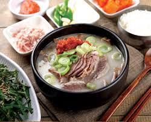

국밥
국에 다가 밥을 넣어 말아먹는 한국의 문화이자 요리의 통칭. 중국의 딤섬이나 일본의 라멘, 베트남의 포처럼 각 나라마다 가장 전통적인 서민 음식을 꼽았을 때 한국에는 국밥이 있다고 말할 수 있을 정도로 대중적 인지도가 높다.
대표적으로 설렁탕이나 곰탕 등이 있는데, 이런저런 양념이 된 나물 등을 넣은 국밥 등은 소고기를 넣어도 국밥이라는 다른 카테고리로 넣는 경우가 있다. 한때 비벼먹는 국밥이라 해서 TV에도 등장한 특이한 요리도 있었을 정도로 국밥의 범위와 응용성은 무궁무진하다.
국밥이나 국수에 국물을 부은 다음 그 국물을 따라내고 다시 국물을 붓는 것을 반복하는 작업이 있다. 이를 토렴이라고 말하며 이런 과정을 통해 면과 밥에 국물의 맛이 배어나고 국물도 식지 않고 따뜻하게 나올 수 있게 된다.
